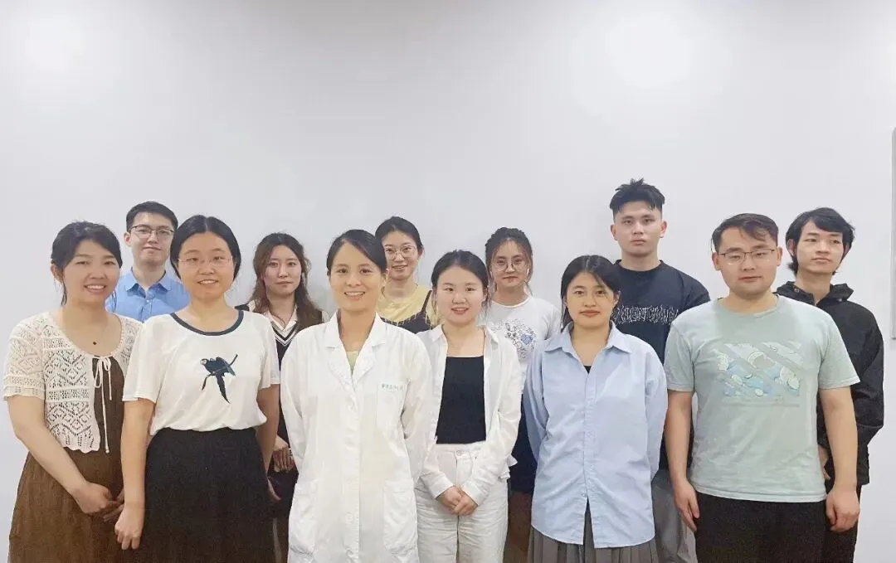

上海交通大学医学院宋佳团队招聘助理研究员、博士后
原文：https://mp.weixin.qq.com/s?__biz=MzAwMzIzOTk5OQ==&mid=2247529136&idx=2&sn=a82d29be361e4fe25c5a61b42164cb29&chksm=9b3c0be0ac4b82f67bd252e21ae7fe2c205fb714a99e3e2e49a158c7e24d50d12e30af9f7a8f#rd 合集：求职/求学/招聘
1
写在前面
我们长期发布招聘/求职板块(甚至我给自己都发了求职：Biomamba求职| 国奖+4篇一作SCI)，欢迎各位老师/老板欢迎联系~我们也在招贤纳士：Biomamba生信基地诚招运营。其它需要求职的小伙伴也欢迎把简历发给我们[Biomamba_zhushou]，大家一起找工作/学习。用人单位也可以联系我们免费刊登招聘信息~
02
ABOUT US

宋佳，上海交通大学医学院附属新华医院心血管发育与再生医学研究所PI。研究方向为生物信息学、化学测量学大数据分析，专注于单细胞、空间组学测序方法、算法的发展。近三年来，在单细胞时空组学分析的关键问题上取得了系列突破，开发了CTC-Tracer、mitoSplitter、LINEAGE、ENCORE、Cancer-Finder等算法以及Well-Temp-Seq、Decoder-seq等时空组学测序方法，并以第一或通讯作者身份在Nat. Biotechnol.、Nat. Commun.、Proc. Natl. Acad. Sci. U. S. A、Nucleic Acids Res.等期刊发表了28篇学术论文。实验室目前经费充足，平台优秀，待遇优厚。因发展需要招聘助理研究员、博士后，具体如下：03
JOIN US
一、助理研究员
1、要求：
- 在国内外已获得生物学、生物信息学等相关专业方向的博士学位，有博士后研究经历者优先；具备单细胞组学、空间转录组学、免疫学、肿瘤学等研究经历者优先；
- 近期以第一作者或通讯作者的研究成果在高水平国际学术期刊上发表；
- 责任心强，热爱科研，具有团队精神及领导能力；
2、待遇：参照《上海交通大学医学院附属新华医院奖励性绩效工资分配实施方案（2022年版）》执行。二、博士后1、要求：
- 在国内外已获得生物学、生物信息学等相关专业方向的博士学位，有博士后研究经历者优先；具备单细胞组学、空间转录组学、免疫学、肿瘤学等研究经历者优先；
- 近期以第一作者或通讯作者的研究成果在高水平国际学术期刊上发表；
- 责任心强，热爱科研，具有团队精神及领导能力；
2、待遇：参照《上海交通大学医学院附属新华医院奖励性绩效工资分配实施方案（2022年版）》执行。

申请材料
 有意者请提供个人简历（包括个人基本情况、教育和工作经历、发表论文情况及科研工作概述等）以及其他可以证明本人能力和学术水平的相关材料，发送邮件到songjiajia2010@shsmu.edu.cn，邮件主题注明“应聘者姓名+岗位”。应聘者信息将严格保密。
有意者请提供个人简历（包括个人基本情况、教育和工作经历、发表论文情况及科研工作概述等）以及其他可以证明本人能力和学术水平的相关材料，发送邮件到songjiajia2010@shsmu.edu.cn，邮件主题注明“应聘者姓名+岗位”。应聘者信息将严格保密。